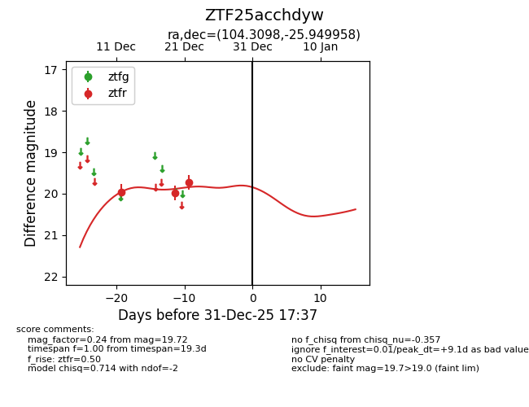
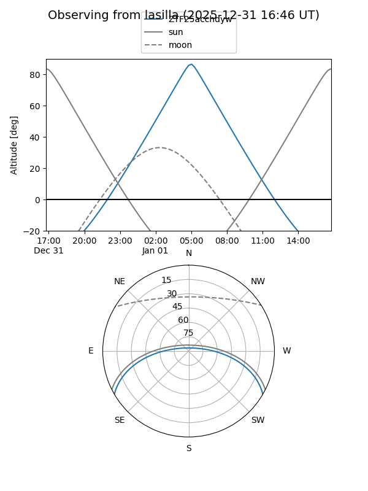
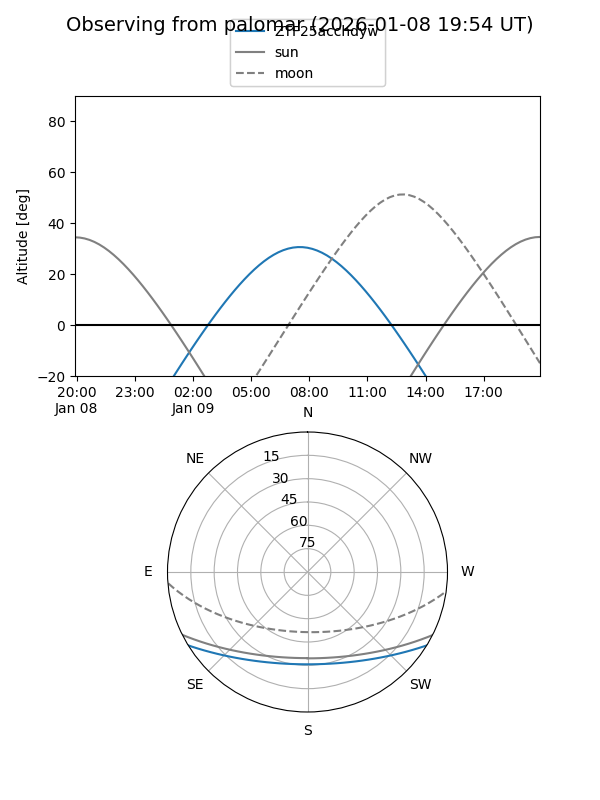
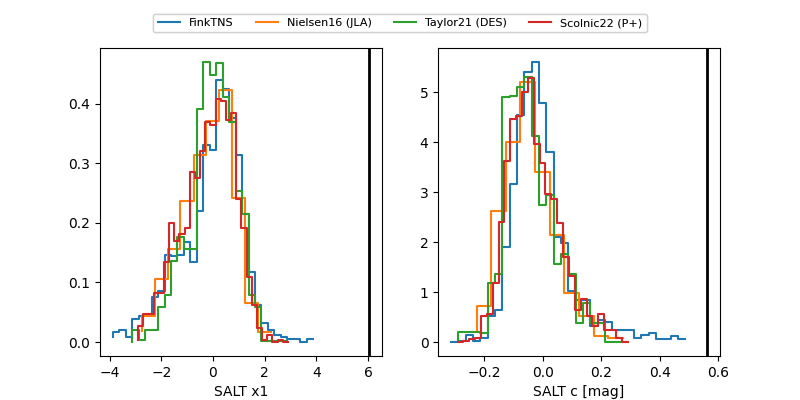

ZTF25acchdyw
Target ZTF25acchdyw at 2025-12-24 18:15
Aliases and brokers:
FINK: fink-portal.org/ZTF25acchdyw
Lasair: lasair-ztf.lsst.ac.uk/objects/ZTF25acchdyw
ALeRCE: alerce.online/object/ZTF25acchdyw
alt names
ZTF25acchdyw (ztf,fink_ztf)
Coordinates:
equatorial (ra, dec) = 104.3098,-25.94996
equatorial (HMS+DMS) = 06:57:14.35,-25:56:59.85
galactic (l, b) = (236.9113,-10.32768)
Flags:
Photometry:
last ztfr=19.72
3 ztfr detections
Lightcurve

Visibility


Additional plots
